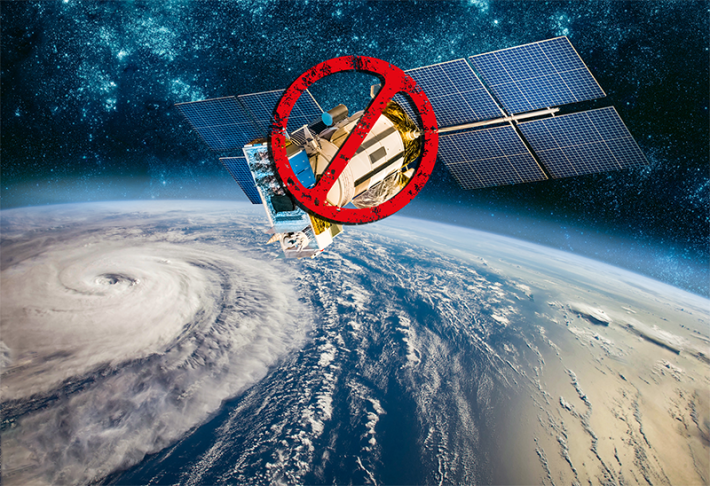
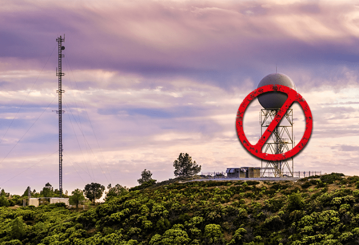
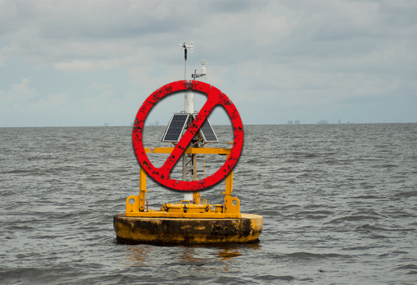

Long before Rick Thoman became a climate scientist—before the late-night calls with National Oceanic and Atmospheric Administration offices around Alaska and the long discussions with local tribal councils—he was just a boy in Pennsylvania who loved when it snowed.
Every morning in grade school, Thoman would carefully log temperatures from the thermometer outside his window, plotting it on graph paper and meticulously taping the sheets to his wall. Eventually, the chain snaked around the room, tracing his growing obsession with tracking the natural world.
Nautilus premium members can listen to this story, ad-free.
Nautilus members can listen to this story.
That early habit became the foundation for a lifelong pursuit: Thoman has spent the past three decades translating complicated climate science for communities facing an increasingly unpredictable world.
At his office at NOAA’s Alaska Center for Climate Assessment and Policy, where he is a climate specialist, Thoman’s regularly peppered with questions from rural hunters asking about thin sea ice and pilots trying to plan fuel deliveries around erratic freeze-ups. In a state where climate change already disrupts daily life, he’s been a link between science and the people it affects. Now, Trump administration cuts are threatening not just his job, but the essential tools that help him provide globally important data.
“We could wake up the next day, the hurricane could be right next to the coast.”
Since taking office in 2025, President Trump has rapidly dismantled climate science, undermining domestic research and international collaborations. In the process, services as basic as weather and storm forecasting are suffering. Scientists warn that the administration’s series of drastic cuts and political manipulation of federal funding and data will stall critical research, hinder disaster preparation and response, and damage the United States’ global standing—spilling beyond science.
In accordance with Project 2025 recommendations, this spring the President’s budget proposed reducing NOAA’s funding by $1.7 billion, calling for steep cuts to its operations, research, and staff. That cut, much of which is still on the table, could eliminate whole programs that conduct vital weather, ocean, coastal, and climate research, weakening forecasts and making it harder to prepare for disasters. The administration has also called for ending numerous satellite, ocean, and coastal monitoring initiatives, and taking down other key weather and climate infrastructure, including models that help forecast hurricanes or track ocean acidification.
For Thoman, a grim uncertainty has hung over each morning as he braced for word that NOAA funding for the Alaska Center for Climate Assessment and Policy was cut. Any time his phone buzzed, it could spell the end of his being able to provide crucial, daily-life information from datasets that have taken decades to build. “Every day you open your email like, Is today the day?” he says.
The list of climate and science programs that have been cut or are on the chopping block continues to grow, a grim roll call the Union of Concerned Scientists calls “a wholesale attack on the democratic systems upon which this nation was built.” Since Trump’s inauguration this year, the group has documented 402 cases in which government officials have censored, distorted, or eliminated federally-funded scientific work. This includes critical Environmental Protection Agency climate and energy research, Department of Interior funding for energy and development programs and wildfire suppression, Department of State’s climate investment programs, key NASA satellites used for climate modeling, and a U.S. Geological Survey program that studies how key ecosystems are changing.
“We are driving a dagger straight into the heart of the climate change religion,” EPA administrator Lee Zeldin said in an official statement describing the agency’s rollbacks. After a recent climate report bent the science so clumsily that its own sources spoke out, federal agencies are losing credibility. Staff at the NSF, NASA, and the EPA have all now signed public statements protesting the administration’s changes. Many of them have since been placed on leave.
The implications tumble far beyond the U.S.’s borders. Thoman explains that in May, the Trump administration announced it would end NOAA services that monitor Arctic sea ice and snow cover. While other nations also collect ice data, it’s far less specific than NOAA’s for many areas, including Alaskan waters. Any ships navigating the Northwest Passage, for example, which is increasingly eyed for faster shipping routes for all kinds of goods, count on ice information from this program. Over the next two months, NOAA and the Department of Defense went on to announce three different dates for when the sea ice program would be terminated. (It was only rescued when the National Snow and Ice Data Center—run out of the University of Colorado, Boulder—was able to pivot to using data from a Japanese satellite.) The back-and-forth changes, Thoman says, were a “fiasco” that left the climate community worried about major gaps that might undercut climate models’ accuracy.

FEWER EYES IN THE SKIES: Proposed cuts from the administration would eliminate numerous satellite missions, including Department of Defense data to help better understand hurricane dynamics and NASA data for climate modeling. These cuts would undermine forecasting local disasters as well as the global climate disaster. Credit: Tasnuva Elahi, with image by Andrei Armiagov / Shutterstock.
Thousands of miles away, James Potemra, an oceanographer at the University of Hawaii, sees how the U.S. stepping back from data collection will put people in that region—and around the world—at risk.
The biggest climate concerns for many Pacific islands are extreme weather, especially storm surge affecting low-lying coastlines, and threats to coral reefs from ocean warming that endanger tourism. Because freshwater can be scarce, communities also rely on seasonal forecasts to prepare for dry periods and manage limited water resources. Much of this information previously came from U.S. National Weather Service offices in Honolulu and Guam, which, as in many places, have been downsized this year.
Other satellite data crucial for understanding the internal structures of hurricanes, previously provided by the Department of Defense, are also at risk of vanishing. Marc Alessi, a fellow at the Union of Concerned Scientists, says this data is very important for identifying when a hurricane might undergo rapid intensification. Without it, he says, “we could wake up the next day, the hurricane could be right next to the coast, and no one would have known how strong it became overnight.”
Most Americans check the weather without knowing that nearly every forecast they see—whether on their phone or on TV—comes from publicly funded NOAA data. Behind those daily predictions are government scientists, experts who’ve devoted their careers to translating the atmosphere’s chaos into something we can plan around. Since January 2025, approximately 2,200 of them have lost their jobs, and many more have taken early retirement offers. Altogether, NOAA has lost about 10 percent of the agency’s workforce. “One of the big, big impacts,” Thoman says, “is something that’s still intangible: The loss of many people with long experience.”
The effects are already rippling across Alaska. Two of the state’s three National Weather Service forecast offices are now noticeably understaffed. For the first time since 1974, no one is on duty during the midnight shift in Fairbanks. “All the overnight forecasts are now coming out of Anchorage,” some 350 miles away, Thoman explains. Since the area has such varied topography, understanding local weather requires deep, location-specific expertise. “But Anchorage didn’t get new staff. And nobody there has meaningful experience forecasting northern Alaska.”
The result, he says bluntly, is what you’d expect: Less accurate forecasts in a region where precise weather information can be a matter of life and death. “The loss of expertise within NOAA is going to have ramifications far and beyond” the meteorologists who’ve just lost their jobs, he says. “It’s emergency managers, it’s anybody that has relied on briefings from the Weather Service”—meaning anyone who wants to know the next time it’s going to rain. And that institutional knowledge? “That’s gone. And that loss of expertise is not coming back.”
For the first time since 1974, no one is on duty during the midnight shift in Fairbanks.
The instability has already taken a toll. Scientists like Sarah Cooley, who once led NOAA’s ocean acidification research, have been caught in a bureaucratic whiplash—fired, reinstated following a court ruling, then fired again after the injunction was overturned. “Who’s going to want to go work for NOAA now?” asks Potemra. Teaching climate science at the University of Hawaii last semester, he watched students wrestle with an impossible question: Should they stick with a career in climate research, or pivot to a less volatile area, as climate science becomes politically targeted?
This uncertainty also impacts the relationships that make international collaborations possible. Potemra has been working with communities in the island archipelago country of Palau to gather data and track climate indicators. This information can help people plan for and work around altered weather, such as consecutive dry days for taro farmers. This spring, he was notified that the three-year project he’d been leading through the University of Hawaii, in collaboration with a project funded by the United Nations Green Climate Fund, had been abruptly canceled. “Unfortunately we just got through compiling what would be needed and useful,” he says.
Not being able to complete the project damages the trust Potemra has built with local communities, who are generally wary of outside researchers arriving with promises and then vanishing. “Frustration number one is not being able to follow through,” Potemra says, adding that he fears the project’s termination reinforces long-standing skepticism rooted in a history of extractive science.

WEATHER—OR NOT: The daily ritual of checking the weather forecast has long been made possible by publicly funded NOAA data and analysis. Drastic cuts to the agency are threatening the quality of these reports—which are fed into phone apps and live reports across the country. Credit: Tasnuva Elahi, with image by Sundry Photography / Shutterstock.
Scientific work often doubles as a form of diplomacy, helping build international connections and trust that can make research—and even business ventures or national security—easier. Potemra, for example, has occasionally been able to smooth over Navy relationships in the vast region, helping facilitate various Department of Defense projects. Losing or damaging these relationships weakens the United States’ global ties and reputation.
That’s especially true as weather and climate scientists rely heavily on international data-sharing networks—and NOAA historically has been among the most significant contributors. Other countries, such as India, for example, depend on NOAA’s global datasets to strengthen and refine their own weather forecasting systems. And one of the best global records of climate change comes from the Mauna Loa observatory in Hawaii, which has measured carbon dioxide in the atmosphere for 67 years. It, and three other key observatories, are slated to be cut, Potemra notes.
Other monitoring has been scaled back too, as many weather balloons have been grounded. In the northwestern Alaskan town of Kotzebue, Thoman says, balloon launches have been “indefinitely suspended” due to staffing shortages caused by budget cuts, and many other locations around the state have reduced their operations by half. Missing these upper-air observations doesn’t just affect local forecasts in Alaska, Thoman says. “It affects every model ingesting that data in the world, everywhere.” Because the atmosphere is always in motion, the sudden lack of balloons in western Alaska “could translate to a bad forecast in Nebraska in five days.”While the impact may be subtle at first, over time, it will also limit how well climate models can assess changes and anticipate tipping points.
Severe weather is not waiting for federal chaos to calm. As hurricane season progresses, NOAA is reckoning with the damage caused by months of internal upheaval, scrambling to rehire staff for “mission-critical field positions” to meet minimum staffing levels.
The stakes will be measured in the mounting toll of disasters we failed to predict, plan for, or prevent. This year, the Federal Emergency Management Agency has lost more than a third of its staff, along with core programs like the Building Resilient Infrastructure and Communities program, and other mitigation grants that previously helped strengthen infrastructure before disasters strike. After FEMA administrator Cameron Hamilton was abruptly fired for testifying against the proposed shutdown of FEMA in May, his replacement, acting director David Richardson stunned staff by saying he didn’t know the U.S. had a hurricane season. The comment came during a June staff meeting, deepening concerns about the agency’s leadership.
Less than a month later, during flash floods in Texas that killed more than 135 people, the National Weather Service’s San Antonio office was missing the staff member who usually coordinates community response, thanks to the Trump administration’s buy-outs. “It’s a tragic example of the ‘last mile problem,’” Thoman says. FEMA’s response was delayed for days by Homeland Security Secretary Kristi Noem’s cost control measures requiring her personal approval of expenditures.

STORMS AHEAD: But we may not know it. With federal cuts to ocean monitoring systems, the ability to keep tabs on impending storms and trends will recede. That might not concern FEMA's acting director David Richardson, though. He recently told staff he didn't know that the U.S. has a hurricane season. Credit: Tasnuva Elahi, with image by EngineerPhotos / Shutterstock.
With funding stripped, state and local governments are left scrambling to fill gaps in disaster preparedness and recovery. Former NOAA scientists warn that the loss of flash-flood modeling tools, such as those developed by the National Severe Storms Laboratory, which was recently shut down, will limit the ability to anticipate rapidly developing storms like the one in Texas. And cuts seemingly unrelated to weather are compounding the problem. For example, there is one radio station serving the entire northwest Arctic, where there is frequently no phone or internet service. Since Congress cut NPR funding, the station is now slated to close. If it does, Thoman says, “when you’re out hunting or at fish camp, you’ll be left with nothing but the sky itself to tell you what’s coming.”
Even as disasters surge, the Trump administration is undermining federal investment in the science and systems that could help prevent or mitigate these losses. That’s incredibly expensive: A recent analysis by Bloomberg Intelligence found that over the past year, the U.S. has spent approximately $1 trillion on disaster recovery and other climate-related expenses—far exceeding earlier forecasts.
Although the price of survival is climbing, for now Thoman is counting his blessings. In July, he heard that the Alaska Center for Climate Assessment and Policy had been given a temporary reprieve: Their funding from the annual budget passed under the Biden administration was granted through August of 2026. There’s broad bipartisan Congressional opposition to the President’s proposal to further cut NOAA’s services, but what might happen next is still up in the air. “It’s better than the alternative,” Thoman says, but “we’ve seen lots of unilateral decisions by agency heads, and the courts have given the blessing to dismantle stuff in spite of Congressional approval.”
For the moment, Thoman plans to return to the basics—asking not just how to fund his work, but why it matters and who it’s for.
Those questions first crystallized for him during his early days as a weather forecaster in Nome, a small town in Northwest Alaska. “I quickly learned that a ‘nice’ day didn’t hinge on temperature or wind speed. If the sun was shining, it was a good day,” he recalled on a University of Alaska Fairbanks podcast.
That simple reality stuck with him not just because it reflected a different relationship with the environment, but also because it taught him to focus on what matters to the people actually living with the weather. It was about how conditions felt on the ground, and what made life easier or harder for those experiencing it firsthand.
That perspective makes watching the networks of American climate science unravel all the more painful. “It is very difficult,” Thoman says. “Some days it’s like, ‘Why the hell am I doing this?’ And I’m doing it because Alaskans need it, whatever the official policy or the administration is.”
“So I’ll keep on until—until I can’t.” 
Lead image: Triff / Shutterstock